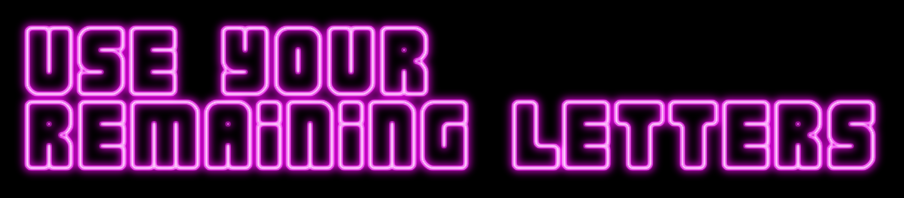

Finds synonyms for the word you input, removes any that use any letter more than once, then displays the rest. (Only works with single-word inputs, not phrases.)
Useful if you only have A-Z type, 1 sort per letter, on hand—but want to letterpress print without needing to make multiple passes moving letters around in between and hoping you register things correctly so it looks okay.
Enter the letters/word(s) from your 1xA-Z type you're planning to use, to see which letters of the alphabet are left for other uses. Then paste those letters into a tool like Unscrambler (choose "all dictionaries") to see possible words you can make from those letters.
